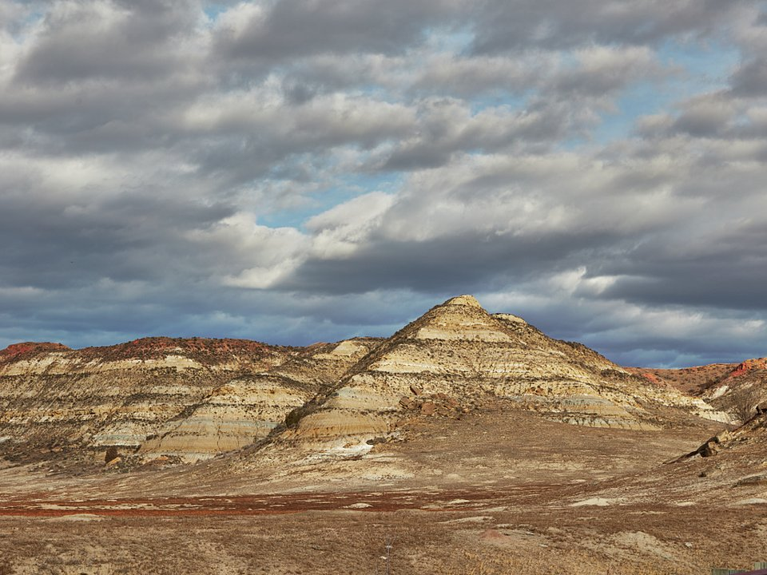

Medora · Historic
Rough Riders Hotel
A restored hotel in the heart of Medora.
Official details for Rough Riders HotelBadlands, wild horses and Roosevelt’s ranch country.
Medora is a tiny Western town at the gate of Theodore Roosevelt National Park, where bison and wild horses roam the painted badlands that shaped a president. Drive the park’s scenic loop, see the Medora Musical under the stars, eat steak cooked on pitchforks and visit the new Theodore Roosevelt Presidential Library.

In our plane it’s a short flight.
Where we’re staying Dinner Things to do The plan
I’ll handle the flight planning; you handle the fun planning!
Time illustration: direct distance at 150 KTAS plus 15 minutes for departure and arrival, matching the discovery page. Use ForeFlight for your actual flight plan.
Check the weekend weather at both ends → Flight category, your minimums and the crosswind on the best runway.
More in Aviation & getting around below. Crew cars change often: call the FBO before you go. How to have a rental car waiting at the FBO · Know something we missed? Tell us.
KDIK, Theodore Roosevelt Regional in Dickinson, is a non-towered field about 40 minutes east of Medora.
Theodore Roosevelt Regional Airport, Dickinson, ND
Confirm FBO hours, fees and ground transportation. No live fuel price is shown.
High plains weather: strong winds, summer thunderstorms and fast-moving winter systems. Check density altitude in summer. About 1340 nm from Myrtle Beach: a long cross-country day with two fuel stops. Plan four or more nights, or break the trip with an overnight on the way.
Rates and availability need travel dates. Summer books early.
A restored hotel in the heart of Medora.
Official details for Rough Riders HotelA Medora motel with a pool, near the musical.
Official details for Badlands MotelSimple rooms in Medora.
Official details for Elkhorn QuartersPrices and availability for your dates, through our partner Stay22. This is an affiliate link: we may earn a commission at no cost to you. The picks above are never paid.
Reserve weekend dinners.
Fine dining in Medora.
Official details for Theodore’s at the Rough RidersSteaks cooked on pitchforks above the badlands.
Official details for Pitchfork Steak FondueA small café for breakfast and lunch.
Medora dining for Cowboy CafeDrive early and late for wildlife.
This prototype links to the local visitor site. It does not yet match events to your travel dates.
Nightly shows.
Tickets for Medora Musical seasonEvening dinners before the show.
Medora for Pitchfork Steak FondueMany businesses close after Labor Day.
Check the local calendar when choosing a weekend, and confirm dates and tickets with the organizer.
A sample long weekend: badlands, a musical and steak on a pitchfork. This is a long flight; plan four or more nights. No bookings or availability confirmed.
A day trip isn't practical from the Southeast; this is a long-flight destination.
Drive to Medora.
The park’s scenic loop at sunrise.
Land at KDIK, subject to weather, your fuel stops and your actual flight plan.
Drive to Medora.
Pitchfork Steak Fondue and the Medora Musical.
The park’s scenic loop at sunrise.
The Presidential Library.
Dinner at Theodore’s.
Painted Canyon.
Allow time at the airport.
A long trip east; start early and plan your fuel stops.
The park’s scenic loop at sunrise.
The Presidential Library.
Dinner at Theodore’s.
These details make the difference between an appealing list and a usable getaway.
Lodging and the musical first.
About 1,340 nm. Plan two fuel stops and four or more nights.
Medora is mostly summer-only.
June to early September.
Picks and links reviewed by WingAway Weekends. Hours, prices, menus and availability change often, so confirm directly with each place before booking. Spotted something out of date, or have a favorite we missed? Email us at hello@wingawayweekends.com.
WingAway Weekends helps you discover the destination. Use ForeFlight and current official aviation information for route, performance, weather, NOTAMs and preflight decisions. Flight planning and PIC responsibility stay with the pilot.